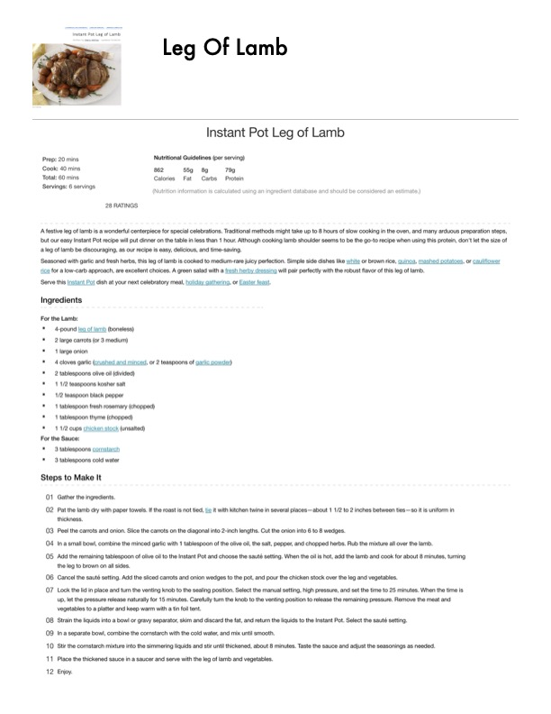

Instant Pot Leg of Lamb

Original cookbook page 144
A festive leg of lamb is a wonderful centerpiece for special celebrations. Traditional methods might take up to 8 hours of slow cooking in the oven, and many arduous preparation steps, but our easy Instant Pot recipe will put dinner on the table in less than 1 hour. Although cooking lamb shoulder seems to be the go-to recipe when using this protein, don't let the size of a leg of lamb be discouraging, as our recipe is easy, delicious, and time-saving. Seasoned with garlic and fresh herbs, this leg of lamb is cooked to medium-rare juicy perfection.
Prep: 20 mins • Cook: 40 mins • Total: 60 mins
Ingredients
- 4-pound leg of lamb (boneless)
- 2 large carrots (or 3 medium)
- 1 large onion
- 4 cloves garlic (crushed and minced), or 2 teaspoons of garlic powder
- 2 tablespoons olive oil (divided)
- 1 1/2 teaspoons kosher salt
- 1/2 teaspoon black pepper
- 1 tablespoon fresh rosemary (chopped)
- 1 tablespoon thyme (chopped)
- 1 1/2 cups chicken stock (unsalted)
- 3 tablespoons cornstarch
- 3 tablespoons cold water
Instructions
- Gather the ingredients.
- Pat the lamb dry with paper towels. If the roast is not tied, tie it with kitchen twine in several places—about 1 1/2 to 2 inches between ties—so it is uniform in thickness.
- Peel the carrots and onion. Slice the carrots on the diagonal into 2-inch lengths. Cut the onion into 6 to 8 wedges.
- In a small bowl, combine the minced garlic with 1 tablespoon of the olive oil, the salt, pepper, and chopped herbs. Rub the mixture all over the lamb.
- Add the remaining tablespoon of olive oil to the Instant Pot and choose the sauté setting. When the oil is hot, add the lamb and cook for about 8 minutes, turning the leg to brown on all sides.
- Cancel the sauté setting. Add the sliced carrots and onion wedges to the pot, and pour the chicken stock over the leg and vegetables.
- Lock the lid in place and turn the venting knob to the sealing position. Select the manual setting, high pressure, and set the time to 25 minutes. When the time is up, let the pressure release naturally for 15 minutes. Carefully turn the knob to the venting position to release the remaining pressure. Remove the meat and vegetables to a platter and keep warm with a tin foil tent.
- Strain the liquids into a bowl or gravy separator, skim and discard the fat, and return the liquids to the Instant Pot. Select the sauté setting.
- In a separate bowl, combine the cornstarch with the cold water, and mix until smooth.
- Stir the cornstarch mixture into the simmering liquids and stir until thickened, about 8 minutes. Taste the sauce and adjust the seasonings as needed.
- Place the thickened sauce in a saucer and serve with the leg of lamb and vegetables.
- Enjoy.
Recipe #144 from collection